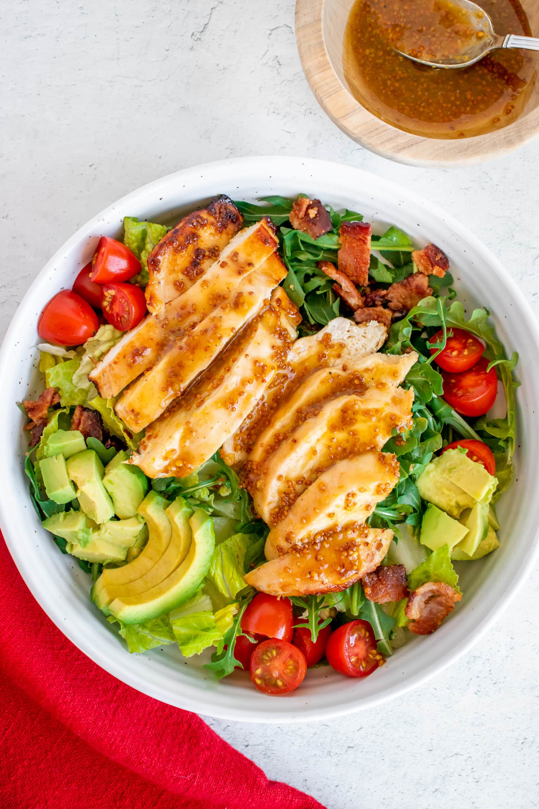

Honey Mustard Chicken Salad Recipe

Made with the juiciest, tender honey mustard chicken, romaine, strawberries, avocado and corn. And the dressing is perfection!
I have the most amazing news ever.
It’s going to be 63 degrees F in Chicago on Sunday! I know, I couldn’t believe it either. I’m even seeing all the restaurants dusting off and setting up their outdoor dining for the warm weekend ahead.
And if you guys have all been braving that midwest winter, I think it’s safe to say we all want to shove our hats/gloves/parkas into a storage bin and never see it again until November/December.
Good riddance, winter.
I’m even going to fire up that grill this weekend to make the cilantro lime chicken and this honey mustard chicken.
I’m not entirely sure which to make first. Probably this honey mustard variation. Because hello, we have greens!
We have crisp romaine, fresh strawberries, velvety avocado slices, and sweet, juicy corn kernels. Oh and the salty, crispy bacon bits. Can’t forget about those.
My favorite part is that we get to use the dressing for the marinade as well, killing 2 birds with one stone. Not to mention, the chicken thighs comes out so stinking juicy and tender!
INGREDIENTS:
- 1/3 cup whole grain Dijon mustard
- 3 tablespoons extra virgin olive oil
- 1 1/2 tablespoons honey
- 1 tablespoon white balsamic vinegar
- 2 green onions, thinly sliced
- Kosher salt and freshly ground black pepper, to taste
- 1 pound boneless, skinless chicken thighs
- 1 tablespoon canola oil
- 4 slices bacon, diced
- 1 head romaine, roughly chopped
- 1 1/2 cups quartered strawberries
- 1 avocado, halved, seeded, peeled and sliced
- 1 cup corn kernels, canned or roasted
STEPS:
- In a medium bowl, whisk together Dijon, olive oil, honey, vinegar and green onions; season with salt and pepper, to taste; set aside 1/3 of the mixture. Place remaining 2/3 of the mixture in the refrigerator until ready to serve.
- In a gallon size Ziploc bag or large bowl, combine chicken and reserved Dijon mixture; marinate for at least 2 hours to 6 hours, turning the bag occasionally. Drain the chicken from the marinade.
- Preheat grill to medium heat.
- Brush chicken with canola oil; season with salt and pepper, to taste. Add chicken to grill, and cook, turning occasionally, until chicken is completely cooked through, reaching an internal temperature of 165 degrees F, about 10 minutes.
- Heat a large skillet over medium high heat. Add bacon and cook until brown and crispy, about 6-8 minutes. Drain excess fat; transfer bacon to a paper towel-lined plate.
- To assemble the salad, place romaine lettuce in a large bowl; top with chicken, bacon, strawberries, avocado and corn. Pour the Dijon dressing on top of the salad and gently toss to combine.
- Serve immediately.